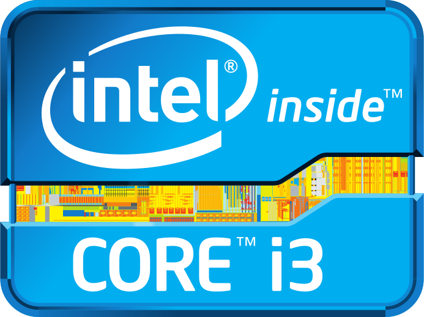
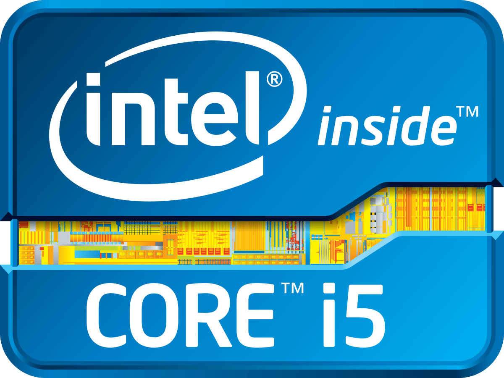
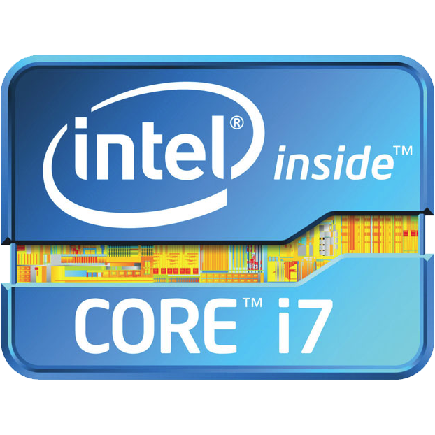

|  |  |  |
|---|---|---|
| A family of dual core, 64-bit,x86 CPU's from Intel. These are intended for entry-level desktop and laptop computers. This is due to their lower heat generation and convservative battery usage. It has a clock speed rangin from 1.30GHz up to 3.50GHz and features either 3MB or 4MB of cache. It utilizes either one of the LGA 1150 or LGA 1155 sockets on the mother-board. | A family of dual and quad core, 64-bit x86 CPU's from Intel. These are midrange between the entry-level i3 and high-performance i7 Series. It has a clock speed of 2.86GHz and a max turbo frequency of 3.33 GHz. They also have 8MB cache as compared to the 4MB of the dual core models. The socket type is an LGA 1156 which is used on many Intel motherboards. | A family of 64-bit x86 CPU's with up to eight cores from Intel. Introduced in 2008. The Core i7 chips were the high-end CPU's i the Core 'i' line prior to the i9 in 2017. These included a graphics processing unit in the same chip package as the CPU. It's clock speed is 1.8GHz. It also has a bigger processor cache at 8MB, compared to the Core i5's 6MB. |
| Further explanation of the original Intel Core i-Series processors: | Introduction to Intel Core i9: |
|---|---|
Intel Core i9: A more recent introduction into the core i-Series worth mentioning is Intel Core i9. A family of 64-bit x86 CPU's with up to 18 cores. It is based on the Skylake microarchitecture. This was designed for high-performance computing and gaming. It features a significant advance in its clock speed, with the ability to overclocked to 4.5GHz compared to its predecessors.
References:
Wikipedia Pc Gamer CPU Benchmarks